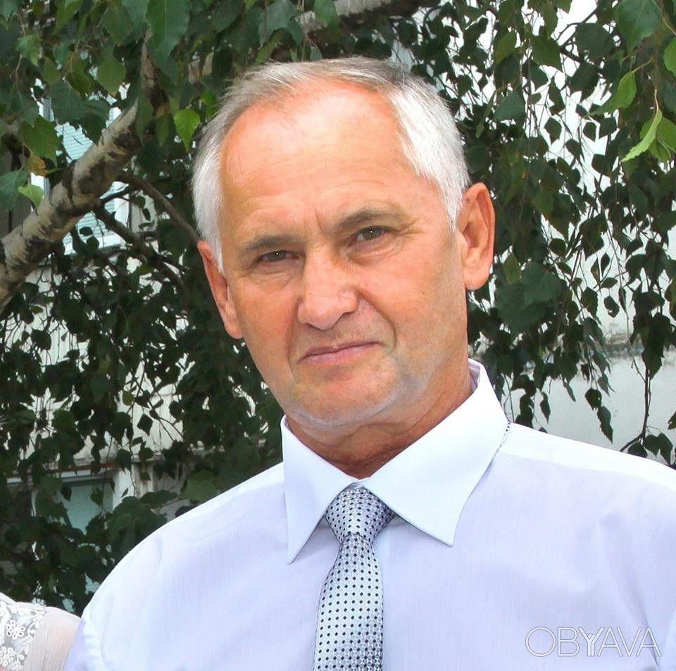
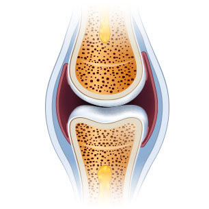

Εξαιτίας του πόνου στα γόνατα και στην πλάτη, δεν μπορούσα να περπατήσω. Τα χάπια, οι ενέσεις και οι επεμβάσεις δεν βοήθησαν εμένα. Αντίθετα: τσάμπα χάλασα χρήματα και έχασα την ενέργειά μου. Δεν ήξερα τι να κάνω. Ευτυχώς, έμαθα για αυτήν την κρέμα. Δεδομένου ότι, αυτή η ανακάλυψη έγινε από έναν διάσημο επιστήμονα, δεν είχα καμία αμφιβολία ότι θα με βοηθούσε. Και ιδού το αποτέλεσμα! Ένιωσα καλύτερα από την πρώτη χρήση. Μέσα σε ένα μήνα νιώθω νέα και γεμάτη ενέργεια.
Κάνω βόλτες μεγάλων αποστάσεων και φροντίζω τον κήπο, που φύτεψα με την εγγονή μου. Ξέχασα το πόνο. Ευχαριστώ!
★★★★★
Μάρθα Γ., 73 ετών
Εύκολο και αποτελεσματικό
Είναι δύσκολο να πιστέψει κανείς πως μια τόσο απλή μέθοδος, μπορεί να κάνει τέτοια θαύματα. Χρησιμοποιήστε την κρέμα και ανακτήστε την κινητικότητά σας. Απίστευτο. Εγώ, οι αδερφές μου και τα ξαδέρφια μου, έχουμε ήδη δοκιμάσει αυτη τη κρέμα. Συνιστούμε σε όλους! Πράγματι, αυτό είναι το τέλος του πόνου στις αρθρώσεις.
★★★★★
Ιωάννα Β., 67 ετών
Νιώθω ότι πως είμαι σημαντικός για την οικογένειά μου
Τα χρόνια σκληρής δουλειάς στο εργοστάσιο έχουν καταστρέψει τις αρθρώσεις μου. Υποσχέθηκα στα εγγόνια μου αρκετές φορές ότι θα έπαιζα ποδόσφαιρο μαζί τους ή θα κάναμε ποδήλατο μαζί, αλλά λόγω του πόνου δεν κράτησα τις υποσχέσεις μου. Τα παιδιά δεν το καταλαβαίνουν και είναι θυμωμένα. Ένιωθα άχρηστος. Μέχρι που η κόρη μου μου έδωσε αυτή την κρέμα Fortuflex. Ήταν τέλεια! Ένιωσα αμέσως τη διαφορά. Πέρασε 1 μήνας που την χρησιμοποιώ και νιώθω ανίκητος! Μπορώ να τρέξω και να κάνω ποδήλατο χωρίς προβλήματα. Περνάω και πάλι χρόνο σε εξωτερικούς χώρους με την οικογένειά μου, όπως και πριν.
★★★★★
Γιώργος Π., 67 ετών
Πήρα τη ζωή μου πίσω
Το υπερβολικό βάρος και η ορθοστασία στην δουλειά, έχουν καταστρέψει τα γόνατά μου: Είμαι κομμώτρια. Δεν άντεχα τον πόνο, γι' αυτό έπαιρνα περισσότερα από 10 χάπια την ημέρα, αλλά με έκαναν να νυστάζω και πήρα βάρος. Ευτυχώς, ένας συνάδελφος μου συνέστησε αυτήν την υπέροχη κρέμα. Αποδείχθηκε ότι ήταν η τέλεια λύση. Ο πόνος εξαφανίστηκε ως δια μαγείας και το πάθος μου για την κομμωτική επέστρεψε. Αποκατέστησα την υγεία μου, που μου επέτρεψε να ξεκινήσω την προπόνηση και έτσι... έχασα 10 κιλά! Απίστευτη αλλαγή.
★★★★★
Άννα Κ., 43 ετών
Η γυναίκα σταμάτησε να παραπονιέται
Στο σπίτι, η γυναίκα μου θα βρει πάντα κάτι να κάνει για μένα: να φτιάξει μια βρύση, να συναρμολογήσει μια ντουλάπα ή να βάψει. Για μένα είναι δύσκολη τέτοια δουλειά, πονάει πολύ η πλάτη μου, δεν μπορώ ούτε να σκύψω ούτε να κάτσω! Οι αγκώνες και τα γόνατα επίσης πονάνε. Ευτυχώς, η κρέμα Fortuflex έκανε τη σπονδυλική μου στήλη υγιή και μου επέτρεψε να δυναμώσω τις αρθρώσεις μου. Ένιωθα πως είχα χάσει βάρος που είχε συσσωρευτεί με τα χρόνια. Η γυναίκα μου έχει σταματήσει να παραπονιέται πως δεν θέλω να τη βοηθήσω στο σπίτι!
★★★★★
Στάθης Ρ., 67 ετών

Ξαναγύρισα στη δουλειά
Μπορείτε να φανταστείτε πώς είναι να χάνεις την κινητικότητα ενός χεριού; Αυτό μου συνέβη: τα δάχτυλά μου πονούσαν, τα χέρια μου ήταν πρησμένα και έτρεμαν. Είμαι κοσμηματοπώλης, αυτό που κάνω είναι η δουλειά μου και το πάθος μου. Γι'αυτό το λόγο, έπρεπε να κλείσω το μικρό μου εργαστήριο, η οικογένειά μου έπρεπε να περιοριστεί σοβαρά σε όλα. Άρχισα να ψάχνω τρόπους για την αποκατάσταση των αρθρώσεων και παντού έλεγαν πως αυτό το προϊόν Fortuflex είναι το καλύτερο. Δοκίμασα την κρέμα, αν και δεν πίστευα ότι θα βοηθήσει, όμως μετά από 30 ημέρες τα χέρια μου ήταν πιο υγιή από ό,τι πριν από 10 χρόνια. Κατάφερα να επιστρέψω στη δουλειά!
★★★★★
Ραφαήλ Χ., 55 ετών
Νέα ζωή σε τόσο χαμηλή τιμή
Συνήθως, αν κάτι είναι αποτελεσματικό, πρέπει να είναι ακριβό. Έτσι συνέβη και με την προσωπική μου μασέρ, την οποία πλήρωσα σχεδόν το ένα τρίτο του μισθού μου και ήλπιζα ότι θα έκανε ένα «θαύμα». Αλλά δεν αξίζει τέτοια χρήματα, και οι αρθρώσεις και η σπονδυλική μου στήλη πονάνε ακόμα περισσότερο. Όταν ο κουνιάδος μου μου πρότεινε να δοκιμάσω την κρέμα Fortuflex, σκέφτηκα ότι ήταν μπούρδες. Πώς θα μπορούσε μια κρέμα να με βοηθήσει, όταν ένας υποτιθέμενος εξαιρετικός θεραπευτής (μασέρ) δεν μπορούσε να με βοηθήσει; Έπρεπε να είχατε δει το πρόσωπό μου, όταν είχε φύγει ο πόνος. Θαύμα!
★★★★★
Ελένη Τ., 67 ετών
Η μόνη αποτελεσματική μέθοδος
Έχω δοκιμάσει διάφορες μεθόδους για να απαλλαγώ από το τσούξιμο και τον πόνο στο ισχίο μου. Τίποτα δεν λειτούργησε. Επιπλέον, ο εκφυλισμός έχει εξαπλωθεί στη σπονδυλική μου στήλη. Με την κρέμα Fortuflex έγινε ακριβώς το αντίθετο. Δεν ανησυχώ πλέον για την υγεία μου, γιατί είμαι 100% υγιής!
★★★★★
Ίριδα Μ., 68 ετών
Ένας κύκλος θεραπείας, και μπορείτε να ξεχάσετε τον πόνο στις αρθρώσεις και τη σπονδυλική στήλη! Προτείνουν οι ειδικοί!
Καλό απόγευμα,
Είμαι ο Stephan Holst, επιστήμονας και ειδικός στον τομέα της μοριακής βιολογίας. Σε αυτή τη σελίδα θέλω να σας παρουσιάσω το μεγαλύτερο επίτευγμα στη ζωή μου, για το οποίο ήμουν υποψήφιος για ένα σημαντικό βραβείο. Έχω αναπτύξει μια μέθοδο, με την οποία ο καθένας μπορεί να εξαλείψει τον πόνο, καθώς και να αποκαταστήσει τις αρθρώσεις και τη σπονδυλική στήλη, και ταυτόχρονα να αποκαταστήσει την κινητικότητα με μία πορεία εφαρμογής.
Χωρίς χημικά, μπορείτε:
Να ανακουφίσετε τον πόνο στις αρθρώσεις και στην σπονδυλική στήλη – να αισθανθείτε ανακούφιση.
Αποκαταστήστε και ενισχύστε τις αρθρώσεις, τους τένοντες, τους μυς και την σπονδυλική στήλη κατά 87% για να λειτουργούν σαν καινούργια.
Αποκαταστήστε την σωματική υγεία χωρίς να φοβάστε την αναπηρία.
Εξαλείψετε το μούδιασμα στις αρθρώσεις και στην σπονδυλική στήλη,
αποκαταστήστε την άνεση και την ομαλότητα της κίνησης.
Προστατέψτε τις αρθρώσεις και τη σπονδυλική στήλη από τη φθορά και διατηρήστε τη σωματική υγεία για πολλά χρόνια.
Εξαλείψετε τον εκφυλισμό, τη φλεγμονή και το πρήξιμο – μειώστε τον πόνο και αποκαταστήστε την άνεση της κίνησης.
Αποκαταστήστε τον οργανισμό μετά από τα κατάγματα, τα διαστρέμματα και τους τραυματισμούς. Και χάρη σε αυτό αποκτήστε τριπλή ενέργεια και απολαύστε ξανά τη ζωή!
Πρέπει να ξέρετε, ότι όλα αυτά μπορούν να επιτευχθούν χωρίς τις επικίνδυνες επεμβάσεις, ακριβά φάρμακα, ατελείωτες ουρές σε ειδικούς (που επίσης τα παρατάνε από την ανικανότητα...) και χωρίς να τρώτε ανθυγιεινές τροφές (βλαβερές για το συκώτι, το στομάχι και τα νεφρά) και τέλος να εξοικονομήσετε πολλά χρήματα Αν θέλετε να το κάνετε αυτό, πρέπει να διαβάσετε τι έχω να σας πω.
Δεν έχει σημασία πόσο χρονών είστε ή πόσο καιρό υποφέρετε από τους πόνους στις αρθρώσεις ή στην πλάτη. Δεν έχει σημασία αν οι αρθρώσεις τρίζουν 2 μέρες ή 20 χρόνια. Ακόμα κι αν ο γιατρός σας, σας είπε ότι οι αρθρώσεις και η σπονδυλική σας στήλη έχουν καταστραφεί εντελώς και ότι έχετε χάσει την κάθε ελπίδα για μια φυσιολογική ζωή... Να ξέρετε πως υπάρχει μια θεραπεία, που μπορεί να σας βοηθήσει να ανακτήσετε την κινητικότητα με μία μόνο πορεία θεραπείας. Χωρίς πόνο!
Δείτε γιατί η μέθοδός μου είναι μια εναλλακτική σε άλλες μεθόδους αντιμετώπισης του πόνου στις αρθρώσεις:
βοηθάει στην ανακούφιση του πόνου σχεδόν αμέσως μετά την εφαρμογή και μπορείτε να ξεχάσετε τα προβλήματα με τις αρθρώσεις μετά από μία πορεία χρήσης.
ασφαλές για τον οργανισμό: η μακρομοριακή φόρμουλα είναι ένα σύμπλεγμα και βασίζεται σε φυσικά συστατικά, που λειτουργούν σε πλήρη αρμονία με το ανθρώπινο σώμα. Επομένως, δεν δηλητηριάζει τον οργανισμό και δεν προκαλεί εθισμό * (*Είναι πιθανή η ατομική δυσανεξία στα συστατικά).
βοηθά στην αποκατάσταση ακόμη και των πιο κατεστραμμένων αρθρώσεων και της σπονδυλικής στήλης ώστε να λειτουργούν σαν καινούργια, χωρίς πόνο.
μπορεί να χρησιμοποιηθεί στο σπίτι αντί να περιμένετε τον ειδικό στις αίθουσες αναμονής και να ζητάτε βοήθεια.
εξοικονομεί πολλά χρήματα αντί να τα σπαταλάτε σε ακριβές και μερικές φορές μη αποτελεσματικές μεθόδους ή χημικά.
Έχω δημιουργήσει μια φυσική μέθοδο, που θα αποκαταστήσει τις φθαρμένες αρθρώσεις και τη σπονδυλική σας στήλη.
Χάρη σε εκείνη μπορείτε να ξεχάσετε τον πόνο και τον φόβο της αναπηρίας. Όλα τα προβλήματα, που προκύπτουν από την αδυναμία των αρθρώσεων ή της σπονδυλικής στήλης, θα ανήκουν στο παρελθόν. Μπορείτε να εξαλείψετε όχι μόνο τον πόνο, αλλά και την κακή κινητικότητα, το τρίξιμο και το πρήξιμο. Τέλος, θα μπορέσετε να κάνετε όλα αυτά, που μέχρι τώρα δεν μπορούσατε να κάνετε από τον πόνο.
Θα ανεβείτε τις σκάλες, θα σκύβετε, θα παίρνετε τα εγγόνια σας στην αγκαλιά, χωρίς κανένα πρόβλημα. Θα μπορείτε να φροντίζετε τον κήπο, να περπατάτε, να κάνετε ποδήλατο, να χορεύετε! Και όλα αυτά, γιατί κατάφερα να αναπτύξω μια φόρμουλα
για τη βελτίωση της λειτουργίας των αρθρώσεων και την αποκατάσταση της κινητικότητάς τους. Πως το πέτυχα αυτό;
Ήθελα να σώσω τη μητέρα μου
Σύμφωνα με πρόσφατες μελέτες, στην Ευρώπη, ένας στους τρεις ανθρώπους μεταξύ 36 και 95 ετών έχει προβλήματα στις αρθρώσεις ή στη σπονδυλική στήλη. Αυτοί οι άνθρωποι συνήθως δεν το συνειδητοποιούν καν, θεωρούν φυσιολογικό ότι μερικές φορές το σώμα πονάει, μουδιάζει ή κάνει κρακ. Ωστόσο, οι περισσότεροι κινδυνεύουν από σοβαρή εκφύλιση και φθορά του χόνδρου, κάτι που μπορεί να σημαίνει, ότι μια μέρα απλά δεν θα μπορείτε να σηκωθείτε από το κρεβάτι...
Δυστυχώς, αυτό το πρόβλημα επηρέασε και τη μητέρα μου. Στην αρχή, δυσκολευόταν μόνο να ανέβει τις σκάλες ή να σηκωθεί από μια καρέκλα. Μετά όμως η κατάσταση χειροτέρεψε... Στον κήπο, τον οποίο φρόντιζε με τέτοιο ζήλο, άρχισαν να φυτρώνουν αγριόχορτα, γιατί δεν μπορούσε πια να τον φροντίσει. Σταμάτησε να μας καλεί σε οικογενειακά δείπνα. Έγινε όλο και πιο οξύθυμη και λυπημένη. Αργότερα, λόγω του πόνου στα γόνατα, τους γοφούς, τη σπονδυλική στήλη και τους αγκώνες της, δεν μπορούσε καν να πλυθεί.
Ήταν απειλή για τη ζωή της!
Το χειρότερο από όλα ήταν ότι η κινητικότητά της άρχισε να απειλεί τη ζωή της. Δεν θα ξεχάσω ποτέ τη μέρα, που ήρθα για να πάω την μητέρα μου σε ειδικό. Η μαμά μου έπρεπε να διασχίσει τον δρόμο και... παραλίγο να την χτυπήσει αυτοκίνητο! Λόγω του πόνου, περπατούσε πολύ αργά και ξαφνικά πόνεσε το γόνατό της τόσο πολύ, που δεν μπορούσε να κάνει άλλο βήμα. Ο οδηγός σταμάτησε την τελευταία στιγμή...
Έγινα έξαλλος όταν είδα την τσάντα της μητέρας μου γεμάτη με διάφορα προϊόντα για τις αρθρώσεις. Έπαιρνε πολλά φάρμακα όλη την ώρα. Γι'αυτό και είχε έλκος στομάχου, προβλήματα στο συκώτι και άλλα προβλήματα υγείας... Η μητέρα μου ήθελε να κάνει κάτι γι' αυτά τα προβλήματα. Όμως όλα αυτά που δοκίμασε, αντί να βοηθήσουν, δηλητηρίασαν κυριολεκτικά το σώμα της.
Πώς ανακάλυψα την φόρμουλα;
Έπρεπε να βοηθήσω τη μητέρα μου να αποκαταστήσει την υγεία των αρθρώσεων, και τη γενική υγεία και ευθυμία. Ήθελα να είναι μια υπέροχη γιαγιά για τα παιδιά μου, όπως ήταν μια υπέροχη μητέρα για μένα. Και σκέφτηκα: «Νεαρέ, είσαι επιστήμονας! Έχεις συμμετάσχει στην ανακάλυψη πολλών διαφορετικών ουσιών για την καταπολέμηση των ασθενειών. Γιατί δεν βρίσκεις ένα προϊόν ενίσχυσης των αρθρώσεων;». Άρχισα λοιπόν την έρευνα...
Έκανα εντατικές εργαστηριακές εξετάσεις επί ένα χρόνο. Δοκίμασα διαφορετικούς συνδυασμούς δραστικών ουσιών στη μητέρα μου. Τονίζω ότι ήταν όλες φυσικές και ασφαλής για τον οργανισμό. Εμπνεύστηκα από τη δύναμη των φυσικών συστατικών σε συνδυασμό με τις τελευταίες εξελίξεις στη μοριακή βιολογία. Η επιστημονική γνώση, η πίστη στη φύση και λίγη τύχη απέδωσαν γρήγορα: κατέληξα σε έναν μοναδικό μακρομοριακό τύπο.
Άρχισα αμέσως να συντάσσω έγγραφα για δοκιμές μεγάλης κλίμακας. Η αποτελεσματικότητά του κατά 98% έχει επιβεβαιωθεί από τα μεγαλύτερα ερευνητικά κέντρα στην Ευρώπη και στις ΗΠΑ! Ακόμη και κατά τη διάρκεια των δοκιμών, η μακρομοριακή μου φόρμουλα βοήθησε στη φυσική αποκατάσταση της λειτουργίας των αρθρώσεων και της σπονδυλικής στήλης σε χιλιάδες εθελοντές.
Καταπληκτικά αποτελέσματα
Ο πόνος της μητέρας μου μειώθηκε, μόλις άρχισε να χρησιμοποιεί την εφεύρεσή μου. Χαιρόταν που ο πόνος στα γόνατά της δεν την ενοχλούσε πια. Αλλά αυτή ήταν μόνο η αρχή. Μια εβδομάδα αργότερα, οι αρθρώσεις και η σπονδυλική στήλη σταμάτησαν να τρίζουν και να μουδιάζουν. Στη συνέχεια εξαφανίστηκε το πρήξιμο στα γόνατα και στους αγκώνες, εξαφανίστηκε κάθε φλεγμονή στις αρθρώσεις και τη σπονδυλική στήλη. Η μητέρα μου ξανάπιασε τον αγαπημένο της κήπο. Μείναμε όλοι έκπληκτοι, όταν ξαφνικά ανέβηκε στο ποδήλατό της γεμάτη ευτυχία!
- Γιατί περπατάτε τόσο αργά; - ρωτούσε ανυπόμονα, όταν βγήκαμε όλοι μαζί για φαγητό. Και εμείς απλά συνηθίσαμε να περπατάμε αργά, όταν είμαστε μαζί της. Μετά περίπου από 4 εβδομάδες, η μητέρα μου παραδέχτηκε με χαρά: «Γιε μου, οι αρθρώσεις μου είναι υγιείς. Αισθάνομαι υπέροχα, όπως στα νιάτα μου! Έχεις εφεύρει το αντίδοτο για τον πόνο στις αρθρώσεις! Πόσους ανθρώπους θα βοηθήσει! Σου είμαι πολύ ευγνώμων!» Και φυσικά η μαμά μου χόρεψε από χαρά με τα δισέγγονά της στα 85α γενέθλιά της. Τα μάτια των καλεσμένων άνοιξαν διάπλατα όταν την είδαν!
Η μητέρα μου ανέκτησε πλήρη κινητικότητα, και μαζί της, την ενέργεια και τη χαρά της ζωής.
Μέχρι τώρα, η φθορά των αρθρώσεων και της σπονδυλικής στήλης με την πάροδο του χρόνου ήταν αναπόφευκτη. Σήμερα, με τη βοήθεια της μακρομοριακής μου φόρμουλας, η φθορά των αρθρώσεων και των σπονδύλων του ανθρώπινου σκελετού, όχι μόνο μπορεί να σταματήσει, αλλά και να αντιστραφεί.
Επιτρέψτε μου να εξηγήσω πώς λειτουργεί η φόρμουλα των δυνατών αρθρώσεων. Αυτή η διαδικασία είναι αρκετά περίπλοκη, αλλά θα προσπαθήσω να την εξηγήσω με τρόπο, που να μπορεί να καταλάβει ο καθένας (μη επιστήμονας).
Βοήθεια στον πόνο και αποκατάσταση των αρθρώσεων 24 ώρες το 24ωρο
Οι αρθρώσεις και η σπονδυλική στήλη φθείρονται με τα χρόνια, αλλά καταστρέφονται και από το υπερβολικό βάρος, την έντονη σωματική δραστηριότητα, τη μεταφορά βαρέων φορτίων, τα υπερβολικά αθλήματα, τους τραυματισμούς και τους μώλωπες. Το αρθρικό υγρό και ο χόνδρος καταστρέφονται. Οι αρθρώσεις είναι σαν μια άρθρωση χωρίς λίπανση: αρχίζουν συνεχώς να τρίβονται και να υποβαθμίζονται. Με τον καιρό, αρχίζετε να αισθάνεστε δυσκαμψία και τρομερό πόνο, που παρεμποδίζει την κανονική κίνηση. Αναπτύσσεται σοβαρή φλεγμονή και καταστροφή.
Δυστυχώς, τα κύτταρα του χόνδρου και του αρθρικού υγρού δεν έχουν την ικανότητα να αυτο αναγεννώνται. Αυτό σημαίνει ότι, σε αντίθεση με άλλα κύτταρα του ανθρώπινου σώματος, δεν μπορούν να επανέλθουν στη ζωή από μόνα τους. Αυτός είναι ο λόγος, που οι αρθρώσεις και η σπονδυλική σας στήλη φθείρονται μέρα με τη μέρα. Λογικά, δεν μπορείτε να σταματήσετε να περπατάτε ή να κάνετε τις καθημερινές σας δραστηριότητες, για να προστατεύσετε τις αρθρώσεις και τη σπονδυλική σας στήλη. Θα ήταν παράλογο.
Γι'αυτό, το καθήκον μου ήταν να δημιουργήσω μια φόρμουλα ριζικής δράσης, που θα βοηθούσε στην εξάλειψη του πόνου, στην αποκατάσταση των φθαρμένων αρθρώσεων και της σπονδυλικής στήλης και στην προστασία από μελλοντικές βλάβες. Και το κατάλαβα! Έχω αναπτύξει μια εντατική μακρομοριακή φόρμουλα ανάκτησης. Ονόμασα το προϊόν Fortuflex.
Η φόρμουλα διεισδύει σε επώδυνα σημεία και βοηθά στην απενεργοποίηση των ηλεκτρικών παρορμήσεων πόνου σε κυτταρικό επίπεδο για να μην υπάρχει πόνος πια. Χάρη στις ιδιότητές του, συμβάλλει στην τόνωση της θρέψης των κυττάρων, που περιλαμβάνει τις αναγεννητικές διαδικασίες. Ταυτόχρονα, τα κατεξοχήν φυσικά συστατικά έχουν θετική επίδραση στην έναρξη της αυτόματης αναγέννησης του χόνδρου και του αρθρικού υγρού. Αρκεί να χρησιμοποιείτε αυτή τη φόρμουλα τακτικά, ώστε η αναγέννηση να γίνεται 24 ώρες το 24ωρο. Κάνετε μια φυσιολογική ζωή και οι αρθρώσεις και η σπονδυλική σας στήλη αναζωογονούνται και ανακτούν την κινητικότητα.
Γιατί η μακρομοριακή μου φόρμουλα ονομάζεται "αντίδοτο για τον πόνο στις αρθρώσεις";
ΕΧΕΙ ΑΠΟΤΕΛΕΣΜΑΤΙΚΟΤΗΤΑ 98% ΓΙΑ ΤΗΝ ΑΝΑΠΑΡΑΓΩΓΗ ΤΟΥ ΧΟΝΔΡΙΝΟΥ ΙΣΤΟΥ ΚΑΙ ΤΟΥ ΥΓΡΟΥ* (*στοιχεία από εσωτερικές μελέτες του Ερευνητικού Ινστιτούτου Ρευματολογίας)
ΠΡΙΝ
Η άρθρωση είναι κατεστραμμένη και επιρρεπής σε εκφυλισμό και πόνο

ΜΕΤΑ
Υγιής αποκατεστημένη άρθρωση, χωρίς πόνο
Μέχρι τώρα, αυτό μπορεί να φαινόταν σαν θαύμα. Ωστόσο, αυτό είναι ένα γεγονός που επιβεβαιώνει την περίπτωση της μητέρας μου και 14 χιλιάδων ανθρώπων, που έχουν ήδη καταφέρει να αποκαταστήσουν γερές αρθρώσεις και σπονδυλική στήλη, χάρη στη μέθοδό μου. Επιπλέον, η μακρομοριακή φόρμουλα έχει αναγνωριστεί και θαυμαστεί από τους καλύτερους ειδικούς στον τομέα της ρευματολογίας, της ορθοπεδικής και της νευρολογίας. Από την άλλη, λαμβάνω συνέχεια γράμματα από ανθρώπους, που με ευχαριστούν που τους βοήθησα. Αυτός είναι ο κύριος λόγος για τον οποίο είμαι χαρούμενος και περήφανος για αυτήν την ανακάλυψη.
ΕΙΝΑΙ ΑΣΦΑΛΕΣ ΚΑΙ ΕΞΑΙΡΕΤΙΚΑ ΕΥΚΟΛΟ ΣΤΗ ΧΡΗΣΗ
Τα φυσικά συστατικά κάνουν θαύματα - η επιστήμη πρέπει απλώς να βρει τα τέλεια συστατικά! Με αυτό το σύνθημα, δημιούργησα μια μακρομοριακή φόρμουλα για την αποκατάσταση των αρθρώσεων. Η θεραπεία αποτελείται από φυσικές και ασφαλείς ουσίες,
που χρησιμοποίησα στην κρέμα, για να μπορέσουν όλοι να ολοκληρώσουν την θεραπεία, χωρίς να φύγουν από το σπίτι. Απλά πρέπει να χρησιμοποιήσετε την κρέμα για να εξαλείψετε τον πόνο, και στη συνέχεια, μέρα με τη μέρα, να απολαύσετε δυνατές και υγιής αρθρώσεις και σπονδυλική στήλη και να ζήσετε ξανά μια γεμάτη ζωή! *Το αποτέλεσμα μπορεί να διαφέρει ανάλογα με την ατομική δυσανεξία συστατικών.
Όλοι οι φίλοι και οι συγγενείς σας, που έχουν συνηθίσει να σας βλέπουν να βασανίζεστε, να περπατάτε με δυσκολία, θα εκπλαγούν. Όταν θα σας δουν να τρέχετε, να κάνετε ποδήλατο και να χορεύετε χωρίς πόνο. Δεν θα πιστέψουν ότι αποκαταστήσατε τις αρθρώσεις σας με μια πορεία εφαρμογής της κρέμας!
ΒΟΗΘΕΙΑ ΓΙΑ ΓΡΗΓΟΡΗ ΑΝΑΚΟΥΦΙΣΗ ΤΟΥ ΠΟΝΟΥ
ΦΥΣΙΚΑ ΣΥΣΤΑΤΙΚΑ
ΑΠΛΗ ΧΡΗΣΗ
ΣΗΜΑΝΤΙΚΟ ΑΠΟΤΕΛΕΣΜΑ
ΒΟΗΘΑ ΣΤΗΝ ΑΠΟΚΑΤΑΣΤΑΣΗ ΤΩΝ ΑΡΘΡΩΣΕΩΝ ΚΑΙ ΤΗΣ ΣΠΟΝΔΥΛΙΚΗΣ ΣΤΗΛΗΣ
ΕΞΟΙΚΟΝΟΜΗΣΗΣ ΧΡΗΜΑΤΩΝ ΜΕΤΑ ΤΗΝ ΠΡΩΤΗ ΕΦΑΡΜΟΓΗ ΤΗΣ ΚΡΕΜΑ
Πώς θα μπορούσατε να χάσετε αυτή την ευκαιρία να νικήσετε τον πόνο και να αποκαταστήσετε την υγεία σας;
Μπορεί να συνεχίσετε να υποφέρετε από τον τρομερό πόνο στις αρθρώσεις και τη σπονδυλική σας στήλη. Μπορείτε επίσης να καταστρέψετε την υγεία σας με βλαβερά χημικά και να φοβάστε να μείνετε κλινήρης για το υπόλοιπο της ζωής σας... Γιατί όμως; Αν σας προτείνω γρήγορο, εύκολο και φθηνό τρόπο να αποκαταστήσετε ανώδυνα την υγεία σας; Στις περισσότερες περιπτώσεις, ένας κύκλος θεραπείας με την κρέμα είναι αρκετός για να βρεθείτε στους 14.000 ικανοποιημένους χρήστες του προϊόντος Fortuflex, που έχουν ήδη ξεπεράσει τον πόνο, έχουν αποκαταστήσει τις αρθρώσεις και τη σπονδυλική στήλη και τώρα απολαμβάνουν την υγεία τους!
Δεν ρισκάρετε τίποτα!
Χρησιμοποιώντας την κρέμα Fortuflex, μπορείτε να βοηθήσετε το σώμα σας να εξαλείψει τον πόνο και να αποκαταστήσει τη σωματική κινητικότητα, με μία θεραπεία. Επιπλέον, δεν διακινδυνεύετε τίποτα!
3 πλεονεκτήματα υπέρ του μακρομοριακού μου τύπου
1. Πρωτοτυπία: Το προϊόν Fortuflex χρησιμοποιεί μια φόρμουλα, που βασίζεται στις πιο ισχυρές ουσίες που συμβάλλουν στην αποκατάσταση των αρθρώσεων και της σπονδυλικής στήλης. Η αποτελεσματικότητά του έχει επιβεβαιωθεί από τις εργαστηριακές μας δοκιμές. Αυτή είναι η μόνη τέτοια καινοτόμος φόρμουλα. Έτσι, μπορείτε να αποκτήσετε το αρχικό προϊόν διαθέσιμο, μόνο μέσω αυτού του ιστότοπου.
2. Ποιότητα: Χάρη στην προηγμένη διαδικασία παραγωγής του μακρομοριακού τύπου, πληροί τα υψηλότερα πρότυπα ποιότητας. Λαμβάνοντας υπόψη την υγεία και την ευημερία σας, η συγκέντρωση των δραστικών ουσιών επιλέγεται με τέτοιο τρόπο, ώστε η χρήση να είναι απολύτως ασφαλής. Όλα αυτά για να διασφαλίσετε, ότι τα αποτελέσματα ανταποκρίνονται στις προσδοκίες σας.
3. Αποτελεσματικότητα: Πολυάριθμες εργαστηριακές και καταναλωτικές δοκιμές επιβεβαιώνουν την αποτελεσματικότητα του προϊόντος Fortuflex. Με βάση αυτά τα αποτελέσματα, η εφεύρεσή μου έχει αναγνωριστεί από ειδικούς σε όλο τον κόσμο, που τη συνιστούν σε όποιον απευθύνεται σε αυτούς για βοήθεια. Είναι πεπεισμένοι ότι με την θεραπεία της κρέμας, μπορείτε να εξαλείψετε τον πόνο στις αρθρώσεις και τη σπονδυλική στήλη, καθώς και να αποκαταστήσετε την κινητικότητα.
Ξεχάστε τον πόνο, αποκαταστήστε τις αρθρώσεις και τη σωματική υγεία με έναν απλό, ασφαλή και οικονομικό τρόπο
Οι μεγάλες φαρμακευτικές εταιρείες στις ΗΠΑ και την Ιαπωνία κυριολεκτικά παλεύουν για το δίπλωμα της ευρεσιτεχνίας στη μακρομοριακή μου φόρμουλα. Αν πουλήσω την φόρμουλα, η κρέμα θα είναι διαθέσιμη σε όλο τον κόσμο, αλλά σίγουρα σε υπερβολική τιμή.
Πριν συμβεί αυτό, αποφάσισα να το διαθέσω στους πολίτες της Ευρώπης, ζητώντας βοήθεια από το Φιλανθρωπικό Ίδρυμα, το οποίο χρηματοδότησε μέρος της παραγωγής, και τώρα το προϊόν είναι διαθέσιμο
50% φθηνότερα. Όλα αυτά για να βοηθήσουμε τον μεγαλύτερο αριθμό ανθρώπων στην Ευρώπη, να εξαλείψουν προβλήματα με τις αρθρώσεις και τη σπονδυλική στήλη τους.
Γι' αυτό σας ενθαρρύνω να εκμεταλλευτείτε αυτήν την ευκαιρία! Η παραγγελία είναι εύκολη. Δεν χρειάζεται να στείλετε χρήματα οπουδήποτε για να λάβετε το προϊόν. Το μόνο που έχετε να κάνετε είναι να συμπληρώσετε
την φόρμα σε 2 λεπτά και σε λίγες μέρες θα παραλάβετε το δέμα, για το οποίο θα πληρώσετε στον κούριερ.
Ευχαριστώ, που αφιερώσατε χρόνο για να διαβάσετε την ανάρτησή μου. Σας εύχομαι υγεία στη νέα ζωή, στην οποία θα
μπορείτε να απολαύσετε την υγεία σας και... θα χορεύετε, θα τρέχετε, θα κάνετε ποδήλατο και ό,τι ήταν αδύνατο μέχρι τώρα λόγω του πόνου στις αρθρώσεις!
Stephan Holst
Αγοράστε την κρέμα Fortuflex σε μειωμένη τιμή 39EUR φθηνότερα
Διαθέσιμα πακέτα:
12
Παραγγείλετε σήμερα και εξοικονομήστε
39EUR. Η προσφορά θα λήξει όταν συμπληρωθεί το όριο των 200 παραγγελιών.